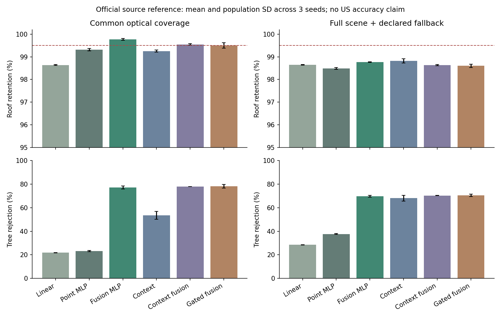
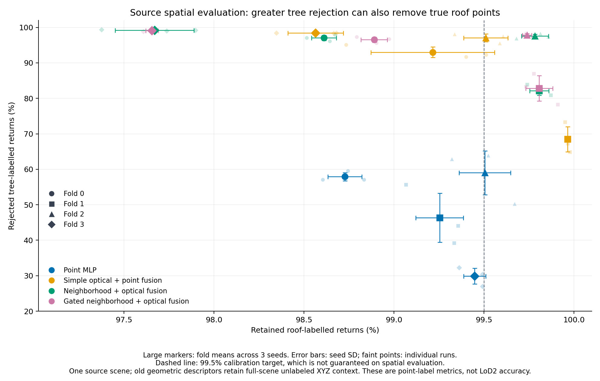
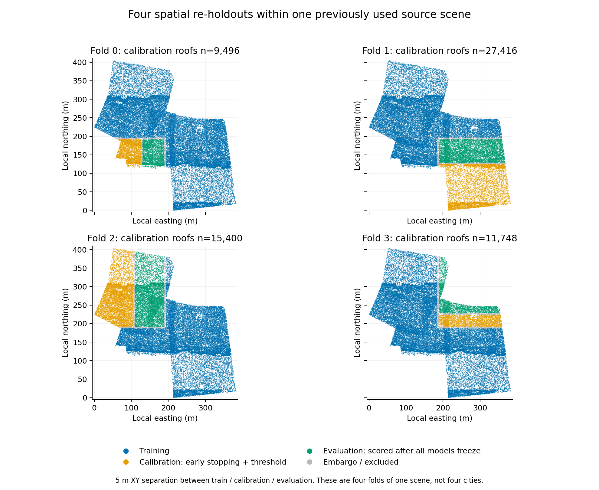

线性 / 点云 MLP
从已有几何描述符判断单个点，作为简单基线。
02 筛选屋顶点 / 2026-10-26
先检查真实屋顶点是否被保住，再看删点后的屋面。所有方法使用同一批训练点、验证区域和重建设置。
正在读取实验结果…
下表是德国 ISPRS 源域的官方测试参考，报告 3 个种子的均值与标准差。该测试集历史上已使用，本轮只在训练和阈值冻结后评估。美国建筑没有独立屋顶 GT。
| 模型 | 真实屋顶点保留率 | 树木点剔除率 | 三类 mIoU |
|---|
完整场景的缺影像区域：光学模型统一回退到同种子的点云 MLP，并使用回退模型自己的阈值。验证目标为保留至少 99.5% 屋顶点，这个目标不保证在测试区或美国仍然满足。

下表为完整场景及对应回退策略。1/2 米偏移用邻近点光学描述符近似，属于机制检查，无法等同真实跨季节树冠变化。
| 模型 | 光学条件 | 屋顶保留 | 树木剔除 |
|---|
同一源场景预先划成 4 个地理分区，每次留出一块，再分开校准区与评价区，三者保持至少 5 米间隔。4 个方法 × 3 个种子 × 4 次划分，共 48 个模型；没有再次使用官方测试集。
| 模型 | 评价区屋顶保留均值 | 最低屋顶保留率 | 树木剔除均值 |
|---|


每行是 4 个空间划分、各 3 个种子的非加权汇总，最低值取这 12 个配置。它们来自同一城市，不能当作 12 个独立地区。已有几何描述符仍用了全场景无标签邻域；新学习邻域、归一化与监督标签按分区隔离。原始点曾参与历史实验，因此这里称空间复核。
原始光学＋点云 → DL 点分类与可靠性 → 验证集校准删点 → 固定 Roofer → 边检查与导出
从已有几何描述符判断单个点，作为简单基线。
把点云描述符与 R/G/NIR、NDVI、纹理一起输入。
学习 5 米内最多 16 个邻居的相对位置与几何特征。
两者采用相同缺模态和偏移增强；门控模型额外学习光学分支的权重。
DL 负责点语义和光学权重；PCA 描述符、阈值校准、平面检测、屋面重建和边检查仍属于统计或几何方法。本轮没有训练遮挡补全或最终结构修剪网络。
包含之前讨论的 67528254、66347628 和 67521425。青色为保留点，红色为当前策略删除点；切换方法时原始观测不动。删点数、屋面片数和闭合检查均不是屋顶精度。
| 策略 | 24 栋总删点 | 原生 LoD2 | 边检查通过 |
|---|
24 栋是在预测前固定的工程诊断样本，不能代表全美国。六个新模型固定采用种子 20261026；另两个策略为原始输入和历史保护规则。壳体边检查没有认证完整有效实体。
源标签的合并干扰类包含树木、低植被、灌木和围栏/树篱；树木指标单独使用 class 8。NAIP 与 LiDAR 相差 156 天；门控的模拟增强不能证明已解决真实时间差。源域为完整场景，目标邻域只含建筑候选点，这个差异仍可能影响迁移。
返回筛点步骤 →